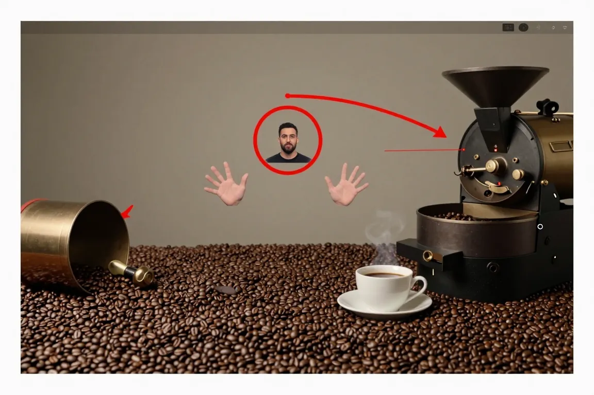

веб · 2020–now · также: Видео на зелёном экране, Зелёный экран в TikTok, Хромакей-объяснение
Человек стоит перед скриншотом, картой или фото, заполняющим весь вертикальный кадр, и рассказывает о нём. Автор вырезает фон инструментом хромакея в приложении коротких видео.

Главная идея
Поставьте говорящего перед доказательством: изображение — декорация, автор — комментатор.
Принципы дизайна
Заполняйте кадр 1080 x 1920 px фоновым изображением; показывайте говорящего по пояс на 40–55% высоты.
Ставьте говорящего в левую или правую треть; оставляйте ключевую область изображения свободной.
Вырезайте говорящего чистой маской с растушёвкой 1–2 px.
Добавляйте белую обводку 3 px вокруг говорящего, когда фон пёстрый.
Приближайте изображение на 110–130% за клип, чтобы вести взгляд.
Отмечайте ключевую деталь красным кругом 6 px или стрелкой при 100% непрозрачности.
Подписывайте речь словами 40 px в нижней трети.
Антипаттерны
Говорящий с видимой зелёной каймой
Фон, не связанный с рассказом
Крошечный текст скриншота, который никто не прочтёт